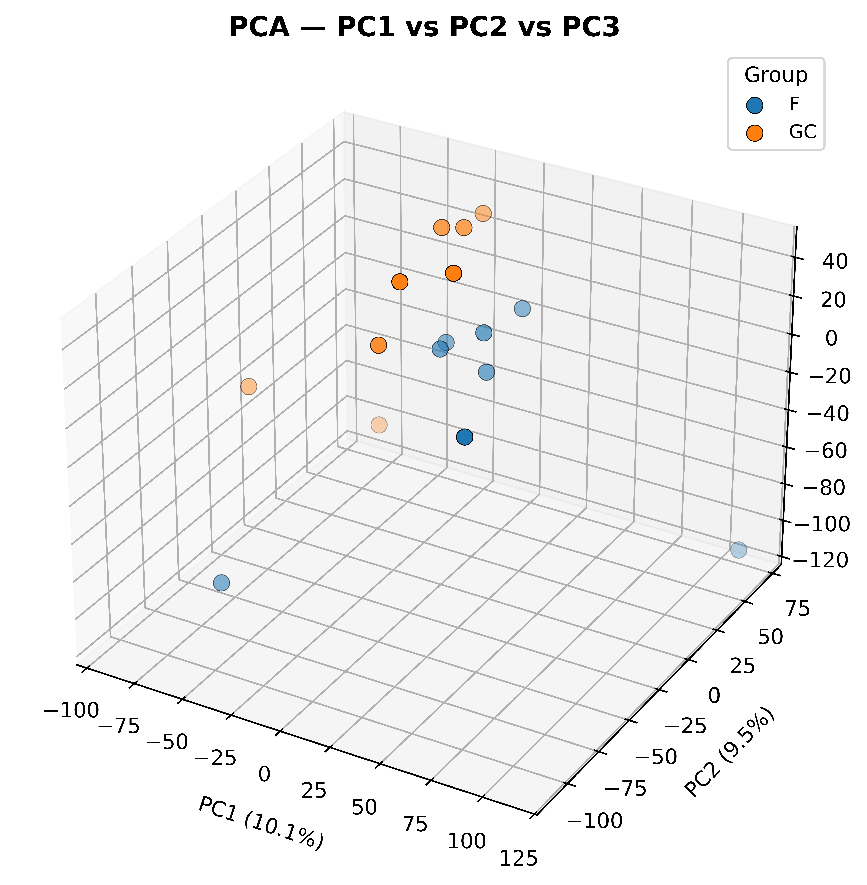
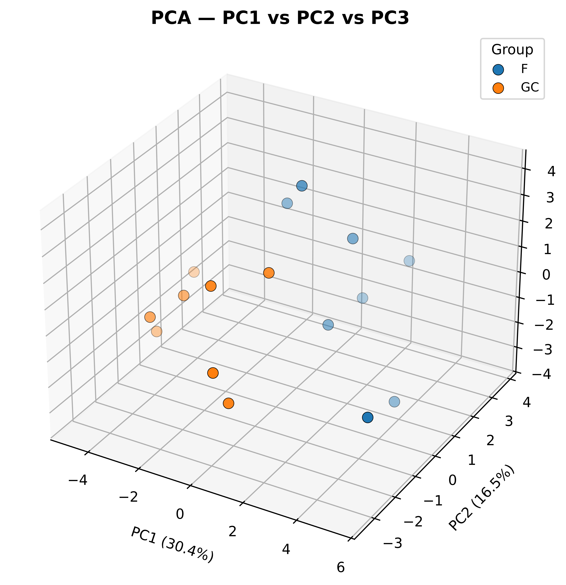
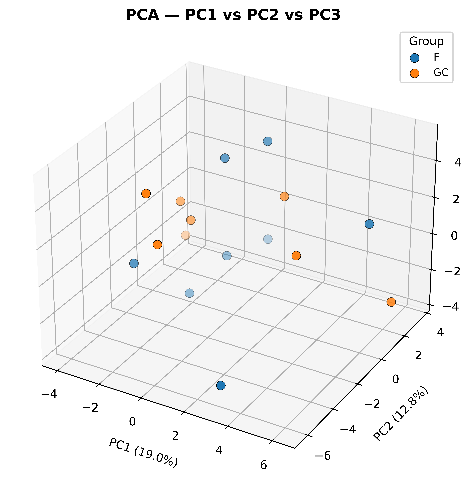
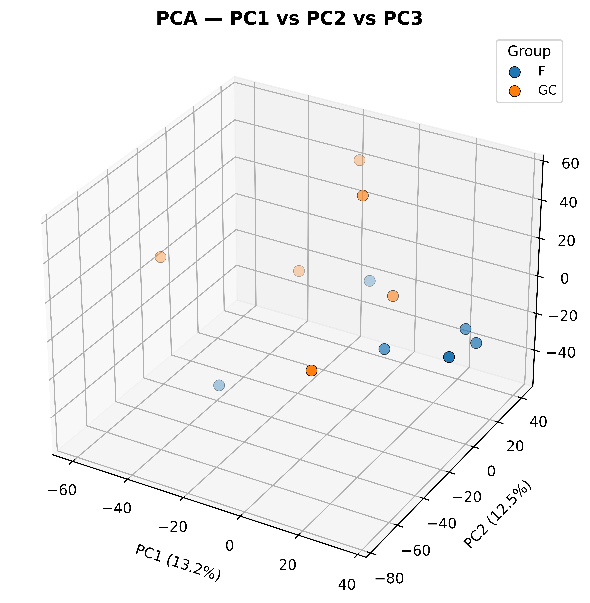
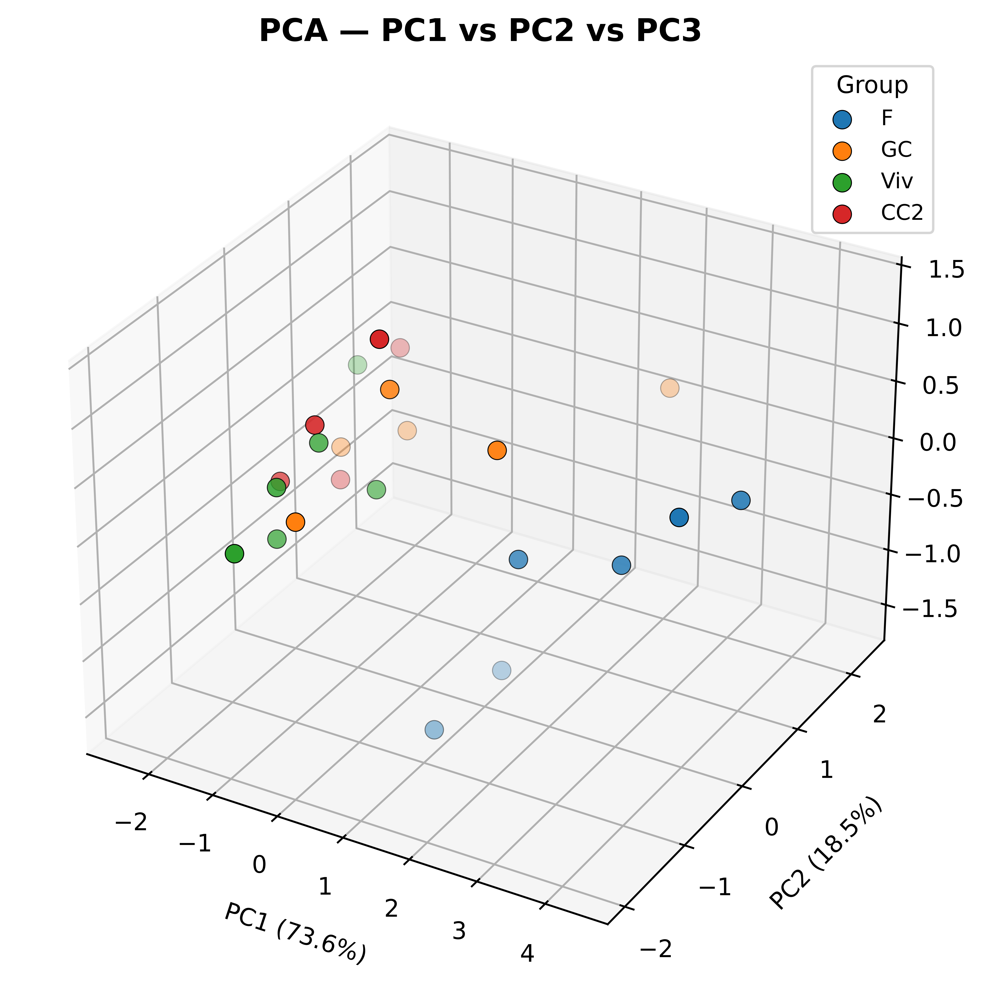
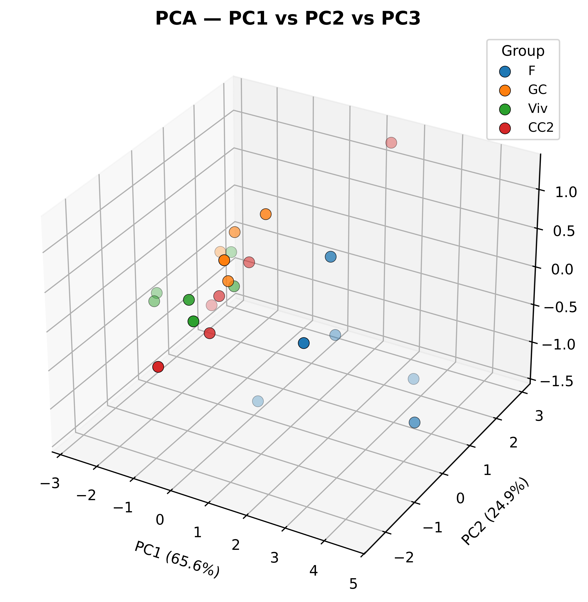
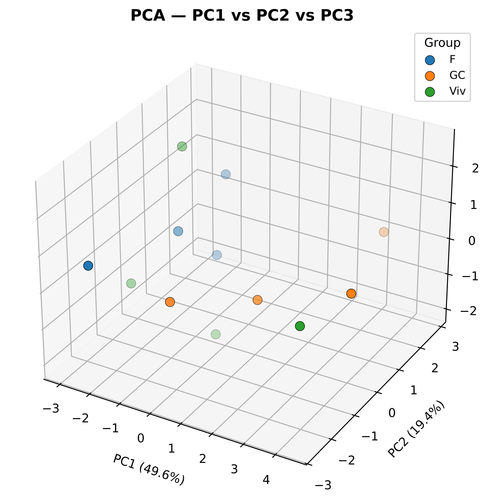
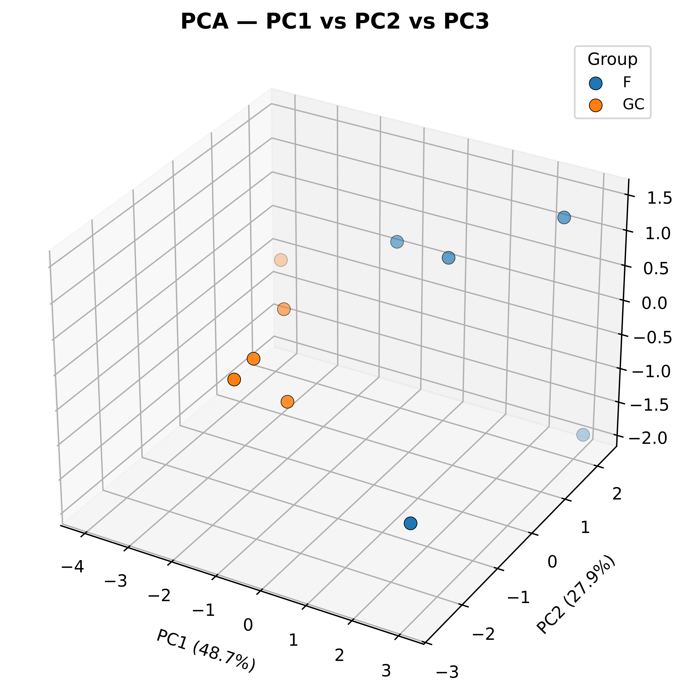

Space biology confronts a critical obstacle: the challenge of incomplete data due to the logistical complexities and high costs of space missions. Addressing this issue, this research presents strategies that integrate AI and digital twin technology to overcome the limitations posed by sparse datasets in space biology research.
By presenting a cohesive strategy that combines synthetic data generation, automatic labeling, and advanced machine learning with digital twins, we showcase an application to the RR9 dataset at OSDR. This research aims to overcome the challenge of data scarcity in space biology, thereby forging a way to unlock insights into the potential of life beyond Earth.
RR9 Background
The Rodent Research 9 payload consisted of three space biology experiments designed to examine impacts of long-duration spaceflight on visual impairment and joint tissue degradation that affect astronauts.
Investigation
Purpose
Experiments
Investigation 1
Effects of microgravity on fluid shifts and increased fluid pressures that occur in the head.
1. To determine whether spaceflight on the ISS alters rodent basilar artery spontaneous tone, myogenic and KCl (Potassium Chloride)-evoked vasoconstriction, mechanical stiffness and gross structure. 2. To estimate whether spaceflight on the ISS alters the blood-brain barrier in rodents, as indicated by ultrastructural examination of the junctional complex of the cerebral capillary endothelium. 3. To determine whether spaceflight on the ISS alters rodent basal vein (inside cranium) and jugular vein (outside cranium) spontaneous tone, myogenic and KCl-evoked constriction, distension, and gross structure. 4. To determine whether spaceflight on the ISS alters the ability of the cervical lymphatics to modulate lymph flow, and thus, regulate cerebral fluid homeostasis.
Investigation 2
Impact of spaceflight on the vessels that supply blood to the eyes.
1. Define the relationships between spaceflight condition-induced oxidative stress in reactive oxygen species (ROS) expression and retinal vascular remodeling and BRB function in mice return to Earth alive. 2. Determine whether spaceflight condition-induced oxidative damage in retina is mediated through photoreceptor mitochondrial ROS production.
Investigation 3
Extent of knee and hip joint degradation caused by prolonged exposure to weightlessness.
1. Determine the extent of knee and hip joint degradation in mice after 30 days of spaceflight on the ISS. 2. Use the DigiGait System to assess gait patterns before and after returning from the ISS.
We are interested in the Retinal data and all things related to Eye. So, all the experiments related to Investigation 1 and 2 will be studied here. Below is the table of all OSD identifiers related to above investigations obtained from https://osdr.nasa.gov/bio/repo/data/payloads/RR-9
Characterization of mouse ocular responses (Microscopy) to a 35-day (RR-9) spaceflight mission: Evidence of blood-retinal barrier disruption and ocular adaptations
Characterization of mouse ocular response to a 35-day spaceflight mission: Evidence of blood-retinal barrier disruption and ocular adaptations - Proteomics data
Characterization of mouse ocular responses (intraocular pressure) to a 35-day (RR-9) spaceflight mission: Evidence of blood-retinal barrier disruption and ocular adaptations
Spaceflight
Tonometry
The purpose of this notebook is to combine all retina data from the Rodent Research 9 (RR9) mission from the NASA Open Science Data Repository, perform exploratory data analysis, impute missing data and train a digital twin.
Original Author: Lauren Sanders
Additional Author(s): Jian Gong, Vaishnavi Nagesh
Load Data
We are downloading all the relevant data as shown in the the table below.
::: {#cell-Load data Cell .cell execution_count=4}
Loading ITables v2.8.0 from the internet...
(need help?)
:::
Data Exploration and Validation
The below table shows number of features in each dataset that constitute the RR9 multi-modal data. This is useful in identifying the maximum number of PCA components required to explain the cumulative variance in the dataset.
::: {#cell-Summarize Data .cell execution_count=6}
Loading ITables v2.8.0 from the internet...
(need help?)
:::
Summary of the Merged Data frame
::: {#cell-Summarize Data Merged Data Frame .cell execution_count=7}
:::
Code
# Nullity Correlation Matrix# This step ensures all categories appear, even if all values are False (not missing)category_missing = rr9_all_df.isnull().T.groupby(category_series).any().T# Add missing categories as all False if necessaryfor cat in cat_cols:if cat notin category_missing.columns: category_missing[cat] =Falsecategory_nullity_corr = category_missing.corr().fillna(0) # Fill NaN with 0 for displaycategory_nullity_corr = category_nullity_corr[cat_cols.keys()].loc[cat_cols.keys()]category_nullity_corr_display = category_nullity_corr.copy()category_nullity_corr_display.index = [s.upper() for s in category_nullity_corr_display.index]category_nullity_corr_display.columns = [s.upper() for s in category_nullity_corr_display.columns]fig, ax = plt.subplots(figsize=(9, 8), dpi=600)sns.heatmap( category_nullity_corr_display, annot=True, fmt=".2f", annot_kws={"size": 9, "weight": "bold"}, cmap='coolwarm_r', center=0, vmin=-1, vmax=1, linewidths=0.5, linecolor="lightgrey", ax=ax, cbar_kws={"shrink": 0.8, "label": "Pearson Correlation"})ax.set_title("Nullity Correlation Matrix by Data Category", fontsize=14, fontweight="bold", pad=14)ax.set_xlabel("Categories", fontsize=12, labelpad=10)ax.set_ylabel("Categories", fontsize=12, labelpad=10)ax.set_xticklabels(ax.get_xticklabels(), fontsize=10, fontweight="bold", rotation=45, ha="right")ax.set_yticklabels(ax.get_yticklabels(), fontsize=10, fontweight="bold", rotation=0)ax.figure.axes[-1].yaxis.label.set_size(10)plt.tight_layout()plt.savefig("nullity_correlation_matrix.png", dpi=600, bbox_inches="tight")plt.show()
Final Interpretation tonometry:
The row/column is all zeros, indicating there is no missing data in tonometry (and so, by definition, no correlation of missingness with any other category).
The gray/neutral coloring visually reinforces the absence of missingness relationships for this category.
Summary:
Zeros for categories without missing data (like tonometry).
Blues for high co-missingness (correlation ≈ 1).
Reds for opposite-missingness (correlation < 0).
Whites/near 0 for no relationship.
Tonometry Row and column of all zeros
Interpretation: There is complete data for tonometry—no samples are missing tonometry measurements. It is independent of the missingness of any other category.
Clusters of Strong Positive Correlation (Blue, Values ≈ 0.8–1.0) pecam, pna, zo1, tunel, hne, maseq: These categories have high positive correlations, meaning when a sample is missing data in one, it is typically missing data in the others.
Interpretation: These categories likely share experimental steps, batch effects, or biological circumstances leading to simultaneous missingness. For example, if a tissue sample was lost or not processed further, all dependent assays (pecam, pna, zo1, tunel, hne, maseq) might be missing for that case.
microct Low correlations (values near zero or slightly negative) with other categories
Interpretation: Missingness in microct is largely independent of other categories. If a sample is missing microct data, it doesn’t predict missingness in other categories and vice versa. microct may face independent measurement or processing issues.
protein Mostly weak or negative correlations with other categories
Interpretation: protein’s missingness does not closely follow others; it may have unique reasons for being absent (different protocol, failed assay, etc.).
Negative Correlations (Red, e.g. ~ -0.16 for maseq/protein, pecam/protein, etc.) Interpretation: There is a slight tendency for samples missing one of these pairs to be present in the other. Not a strong effect, but it may point to mutually exclusive failures in certain scenarios.
Summary Table of Patterns
Category
Strongly Linked Missingness
Independent/Negative
tonometry
None (always complete)
All
pecam, pna, zo1, tunel, hne, maseq
Each other (clustered)
microct, protein
microct
None
Other categories(mostly weak)
protein
None
Whitish to red with others
Practical Actions
Impute or interpret missingness jointly for the strongly linked group (pecam, pna, zo1, tunel, hne, maseq).
Handle microct and protein separately, as their missing data mechanisms are independent.
No missingness work is needed for tonometry.
Little’s MCAR Test
Code
from sklearn.linear_model import LogisticRegressionresults = {}for cat in category_missing.columns: X = category_missing.drop(columns=cat) y = category_missing[cat]# Skip if y has only one class (all 0s or all 1s)if y.nunique() <2:print(f"Skipping {cat}: only one class present in missingness indicator.")continue clf = LogisticRegression() clf.fit(X, y) score = clf.score(X, y) results[cat] = scoreprint("Model accuracy for predicting missingness in each category:")print(results)
Skipping tonometry: only one class present in missingness indicator.
Model accuracy for predicting missingness in each category:
{'hne': 0.98, 'microct': 0.88, 'pecam': 1.0, 'pna': 0.99, 'protein': 0.88, 'rnaseq': 0.95, 'tunel': 0.98, 'zo1': 0.99}
Tonometry was skipped (only one class—no missing values, so nothing to model or impute).
For all other categories, the logistic regression models predict missingness very accurately (scores from 0.88 to 1.0).
Interpretation:
High accuracy for all other categories (~0.88–1.0):
The missingness in each of these categories is highly predictable from the missingness in other categories.
This is strong evidence for the MAR (Missing At Random) mechanism:
Missingness depends on observed data (other categories), not on unobserved values within the category itself.
It also shows the missing data structure is very systematic, not random!
Imputation guidance:
Since missingness is MAR, multivariate imputation methods (like MICE or KNNImputer) are recommended because they use information from other variables when filling in missing values.
Avoid simple mean/median imputation: it ignores the structure you’ve discovered.
Category
Skipped
Model Accuracy
Missingness Mechanism Suggestion
Imputation Recommendation
tonometry
Yes
—
Complete data (no missingness)
None needed
hne
No
0.98
MAR
Use multivariate methods (e.g., MICE)
microct
No
0.88
MAR
Use multivariate methods
pecam
No
1.00
MAR (perfectly explained)
Use multivariate methods
pna
No
0.99
MAR
Use multivariate methods
protein
No
0.88
MAR
Use multivariate methods
rnaseq
No
0.95
MAR
Use multivariate methods
tunel
No
0.98
MAR
Use multivariate methods
zo1
No
0.99
MAR
Use multivariate methods
Code
# %%import pandas as pdimport numpy as npfrom scipy.spatial.distance import squareformfrom scipy.cluster.hierarchy import linkage, dendrogramimport matplotlib.pyplot as plt# --- Assume you already have: ---# full_df : your main DataFrame# cat_cols (dict) : {'category1': [colA, colB, ...], ...} for all categories# 1. Build category-level nullity matrixcategory_null_matrix = pd.DataFrame(index=rr9_all_df.index)for cat, cols in cat_cols.items(): present_cols = [col for col in cols if col in rr9_all_df.columns]# Category is "missing" if ALL its columns are missing in a row; change .all() to .any() for stricter/looser rule category_null_matrix[cat] = rr9_all_df[present_cols].isnull().all(axis=1).astype(int)# 2. Compute correlation and distance matrix among categoriesnull_corr = category_null_matrix.corr()distance_matrix =1- null_corr.abs()_dm = distance_matrix.to_numpy(copy=True)np.fill_diagonal(_dm, 0)distance_matrix = pd.DataFrame(_dm, index=distance_matrix.index, columns=distance_matrix.columns)distance_matrix = distance_matrix.replace([np.inf, -np.inf], 1).fillna(1)condensed_distance = squareform(distance_matrix.values, checks=False)# 3. Cluster and plot vertical dendrogramlinkage_matrix = linkage(condensed_distance, method='average')plt.figure(figsize=(7, 8), dpi=600)ax = plt.gca()dendrogram( linkage_matrix, labels=[s.upper() for s in cat_cols.keys()], orientation='right', leaf_rotation=0, leaf_font_size=11, above_threshold_color='#444444', color_threshold=0.4*max(linkage_matrix[:, 2]))ax.set_title('Hierarchical Clustering of Categories\nby Missingness Pattern', fontsize=13, fontweight='bold', pad=12)ax.set_xlabel('Distance', fontsize=11, labelpad=8)ax.set_ylabel('Category', fontsize=11, labelpad=8)ax.tick_params(axis='x', labelsize=10)ax.spines['top'].set_visible(False)ax.spines['right'].set_visible(False)plt.tight_layout()plt.savefig("nullity_dendrogram.png", dpi=600, bbox_inches="tight")plt.show()
Next Steps: - Proceed with a multivariate imputation approach for the MAR categories. - No imputation needed for tonometry.
PCA on Different Categories of Datasets
PCA on RNASeq

PCA on RNASeq for Only Predictive Genes for Phenotype

/var/folders/z2/s8dllncn3vjbz40m8g4cmlrm0000gn/T/ipykernel_2779/23714526.py:36: UserWarning:
FigureCanvasAgg is non-interactive, and thus cannot be shown
PCA on Phenotype Related RNASeq Genes
51 genes found in the RNASeq dataset.

/var/folders/z2/s8dllncn3vjbz40m8g4cmlrm0000gn/T/ipykernel_2779/1362596538.py:14: UserWarning:
FigureCanvasAgg is non-interactive, and thus cannot be shown
PCA on Proteomics

PCA on TUNEL Assay

PCA on HNE Immunostaining Micoscopy

/var/folders/z2/s8dllncn3vjbz40m8g4cmlrm0000gn/T/ipykernel_2779/3355970373.py:3: UserWarning:
FigureCanvasAgg is non-interactive, and thus cannot be shown
PCA on Micro CT

/var/folders/z2/s8dllncn3vjbz40m8g4cmlrm0000gn/T/ipykernel_2779/4281597862.py:3: UserWarning:
FigureCanvasAgg is non-interactive, and thus cannot be shown
PCA on Combined Immunostaining Micoscopy data from Zo-1, PECAM, PNA and HNE
Zo-1, PECAM, PNA and HNE are all immunostaining microscopy. It would be useful to see if combining them all helps in better separation between the groups.

/var/folders/z2/s8dllncn3vjbz40m8g4cmlrm0000gn/T/ipykernel_2779/1735552062.py:4: UserWarning:
FigureCanvasAgg is non-interactive, and thus cannot be shown
From the PCA analysis of different datasets, it seems like there is fair separation betwee flight and other groups. However, there isn’t sufficient data to show separation between GC, Viv and CC groups.
Data Analysis Correlation Between HNE and RNASeq
HNE Immunostaining microscopy has data across four different groups (F, GC, Viv, CC2) and RNASeq is available for two different groups (F and GC). Among these F15-F20 and GC15-20 have data for both HNE and RNASeq.
To be able to anchor the imputation of RNASeq data onto biological characteristic, the correlation between RNASeq and HNE needs to be determined.
Data Analysis Correlation Between TUNEL Assay and RNASeq
The reason to select TUNEL for correlation analysis is that TUNEL assay points seem to separate out cleaner on the PCA plots than HNE data points between different groups. TUNEL Assay has data across four different groups (F, GC, Viv, CC2) and RNASeq is available for two different groups (F and GC). Among these F15-F20 and GC15-20 have data for both TUNEL and RNASeq.
To be able to anchor the imputation of RNASeq data onto biological characteristic, the correlation between RNASeq and TUNEL needs to be determined.
Imputation of Relevant Genes from Tunel data
First step is to see how many genes of the interested gene list do not have data. Imputation will be done in two groups: F(light) and not F(light). Samples F9 and F11 have RNASeq values, but not TUNEL assay values.